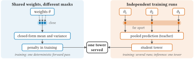
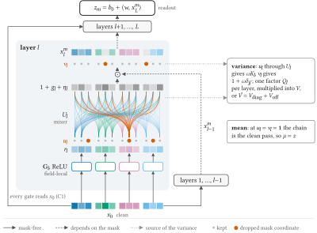
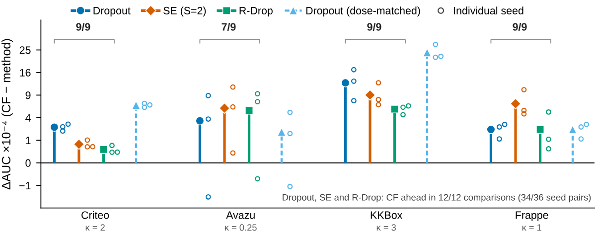
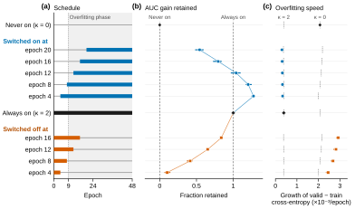
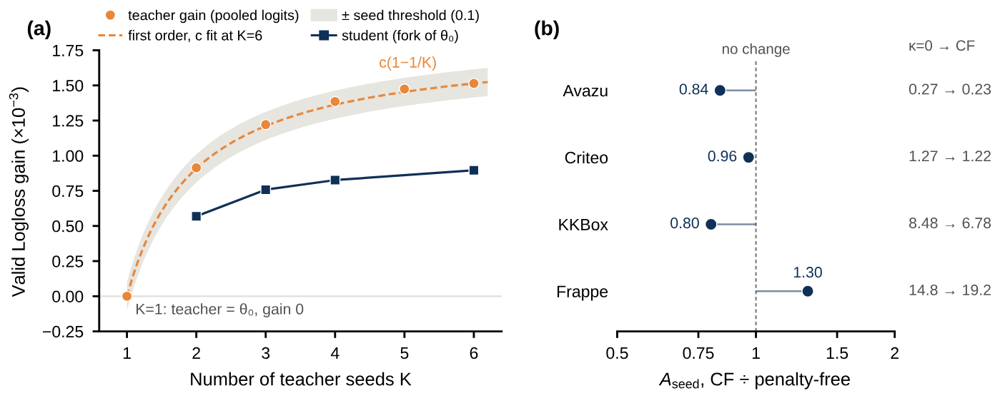

FinalNet、QNN（二次神经网络）这类点击率模型都会在标签损失之外加一项“向自己的平均预测看齐”的损失，比如同一个网络用两种 dropout 跑两遍，再让两遍都去拟合两者的平均。这招有效，但没人说清它到底约束了什么。新加坡国立大学和中国科大作者的这篇论文给出了答案：当遮挡次数趋于无穷，这类目标精确地等于“平均打分的标签损失”加上“各次遮挡预测之间分歧”的惩罚。在网络结构满足三个条件时，这个惩罚可以用一次确定性前向近似算出，不用再采样。作者据此设计了单塔模型 FLMNet，再把多个随机种子训练出的塔蒸馏进一个学生。五个公开基准上，两个 FLMNet 版本在 AUC 和 Logloss 上都排前两名。绝对提升不大，Criteo 上 AUC 从最强基线的 0.8156 提到 0.8169，但论文把收益从哪来拆得很清楚。
1. 问题：自蒸馏究竟在约束什么
FinalNet 把两个交互模块的 logit 取平均，让每个模块向平均值学习；QNN 让同一网络在两套独立 dropout 下各跑一遍，把两次预测概率的平均冻结成目标，再让两遍都向它靠拢。两者的“老师”都是正在训练的模型自身成员的平均，部署时不需要第二个模型，作者统称为自集成蒸馏。
两篇原论文的消融都显示，去掉这一项 AUC 会下降，但幅度不大：QNN 在 Criteo 上只掉 0.06 个百分点，在较小的 Frappe 和 KKBox 上掉 0.17 和 0.19；FinalNet 掉 0.03 到 0.12。两篇给出的解释也不同，一个说是模块间共享知识，一个说是两遍之间互相纠错、让决策边界更平滑，但都没有实验把机制单独拎出来。
还有一个容易混淆的地方。经典集成的成员是独立训练的网络，来自不同初始化或数据顺序；自集成的成员只是同一组权重在不同遮挡下的变体。前者分布在预测空间的不同“山谷”，后者都在同一个解附近。论文的思路是把这两种分歧分开处理：同一座塔内部的分歧叫遮挡噪声，不同种子之间的分歧叫种子噪声。

2. 无限遮挡下的目标：标签损失加分歧惩罚
设某个样本在遮挡 下的 logit 为 ，所有遮挡下的平均 logit 为 。交叉熵可以写成 ，其中 是 softplus，后一项对 logit 是线性的，取平均时不产生额外项。于是对遮挡取期望后，损失等于平均 logit 的交叉熵，再加一项
这就是 softplus 的 Jensen 差：各次预测越一致， 越小。论文证明，在 logit 空间汇聚老师的前提下，遮挡数趋于无穷时，自集成目标收敛到 ，只差一个梯度为零的项。普通 dropout 训练正好是 ；QNN 若改在 logit 空间汇聚，极限是 。也就是说，自集成蒸馏在 dropout 之外多加的，只是把分歧惩罚的系数从 1 提到 2。需要注意，QNN 原文平均的是概率而不是 logit，这个精确结论只对 logit 汇聚成立。
仍是对所有遮挡的期望，不能直接算。作者先给出上下界： 至多是 logit 方差 的八分之一，下界在 sigmoid 饱和时退化为 0。常见做法是做二阶泰勒截断，只保留 那一项，但在 较大的样本上会把 低估好几倍。论文改用同方差的高斯分布代替真实遮挡分布，再用三点高斯–埃尔米特求积计算这个期望：只在 和 三个点上取值，按 2/3、1/6、1/6 加权求和，就近似了对正态分布的期望。在训练好的塔上逐样本对比 2,048 次采样的蒙特卡洛值，高斯代理与真实值的比值始终在 0.72 到 1.12 之间，而二阶截断在少数样本上不到真实值的四分之一。
由此还能推出一个实际结论：只保留展开里最主要的一项（即上文说的 项）时， 与 成正比，而 又与 成正比（ 是遮挡率），所以 和 只通过“剂量” 起作用，两者无法分开辨认。去掉蒸馏项但不调整遮挡率的消融，改变的只是剂量，而不是目标的形式。
3. 让方差算得出来的塔结构
高斯代理需要平均 logit 和方差 。作者给出三个条件，满足时两者都有闭式解：乘法门控只读取未遮挡的输入，输出层是仿射的，每层只对表示做逐坐标缩放。此时平均 logit 正好等于不加 dropout 的那次前向的 logit，方差也有精确公式。logit 等于偏置加上各隐藏坐标的加权和，第 个坐标的值是各层在这个坐标上乘的因子连乘起来。每层的因子是 ： 是这个隐藏坐标自己的遮挡因子， 是不加遮挡时的门控值， 是门控单元被遮挡带来的扰动，算法是把每个门控单元的输出乘上它的遮挡因子减 1，再经混合层分到各坐标。所以要算任意两个坐标 、$j'$ 乘积的期望。各层的遮挡相互独立，这个期望就等于逐层相乘：每层有一张隐藏维度×隐藏维度的表，第 $(j,j')$ 格是 ，把各层这一格连乘起来就行。这里 是单个遮挡因子的方差， 是门控值； 衡量两个坐标共用了多少门控单元， 是第 个门控单元的输出， 是把门控单元混合到各坐标的线性层。同一坐标多出的因子 来自这个坐标自己的遮挡，不同坐标之间只通过共用的门控单元互相牵连。再用输出层权重 加权求和，减去均值的平方，就得到 。
QNN-α 不满足第一个条件，它的门控读取上一层被遮挡过的输出，各层随机量于是相互依赖。在 Criteo 上，对训练好的 QNN-α 硬套闭式公式，有 76% 到 81% 的样本平均值偏离采样均值超过三倍标准误；方差估计在加惩罚训练后只剩真实值的 3.6%。这意味着训练会去压低估计值，而不是真实的分歧。直接让门控改读输入嵌入，公式就变得精确，但不加惩罚时验证 AUC 下降 10.5×10⁻⁴。
FLMNet 的解法是：每个字段的嵌入单独进入自己的一组 ReLU 门控单元，任何单元都只看一个字段；所有单元的输出再经过一个可学习的线性混合矩阵，映射回塔的宽度，得到每个隐藏坐标的门控值 ，一个字段的门控就这样影响到所有隐藏坐标。表示按坐标乘以 $1+g$。另外，嵌入进塔之前先做一次字段重校准：在每个嵌入维度上，把各字段在这一维的值按一张可学习的字段×字段权重表加权求和，得到这个字段在这一维的缩放量，嵌入的这一维再乘上"1 + 增益 × 缩放量"。下表是 Criteo 验证集上三种塔的对比（三个种子均值，都是 4 层，每个隐藏坐标配 5 个门控单元，论文称 5 个分支）：
| 塔 | 门控读取 | 参数量 | AUC（不加惩罚） | 闭式惩罚 / 蒙特卡洛值（κ=2） |
|---|---|---|---|---|
| QNN-α | 上一层输出 | 3.05M | 0.81478 | 0.039 |
| QNN-α 改读嵌入 | 输入嵌入 | 3.05M | 0.81373 | 0.998 |
| FLMNet | 输入嵌入，逐字段 | 3.14M | 0.81469 | 1.000 |
FLMNet 只比原版 QNN-α 低 0.9×10⁻⁴，同时保住了公式的精确性。不过它一次改了三处，这个对比只能说明三处改动的总效果。

精确方差每层要算一个隐藏维度平方大小的表，比一次前向贵两个数量级，只能用作标尺。精确方差里有两类项：只涉及同一个隐藏坐标的项，和两个不同坐标互相牵连的交叉项。训练时用的是截断版本：前一类全部保留；后一类把连乘展开成 的多项式，只保留一次项，也就是每次只让一层的门控遮挡起作用的那部分， 及更高次的项丢掉。这样每层只多两次矩阵乘法。在 24,576 个验证样本上取中位数，这种截断只把方差少算了 0.035%。作为对照，更粗的近似是把门控单元上的随机遮挡也只展开到一次项，这样方差会少算约 8%，所以作者用的是前一种。附录还记了一个工程教训：作者早先把方差写成两个接近的大数相减，结果算出负方差，白跑了四次训练才找到原因，后来改成每一项都非负的递推。
4. 实验：提升多少，靠什么
五个基准是 Criteo、Avazu、KKBox、Frappe 和 ML-1M，对比十七个模型，所有模型都由作者在同一协议下重跑，多数取三到六个种子的均值。Avazu 原始的验证集和测试集正样本率不同（16.8% 对 15.2%），作者把两者合并后重新随机划分。
| 模型 | Criteo AUC | Avazu AUC | KKBox AUC | ML-1M AUC |
|---|---|---|---|---|
| DNN | 0.8136 | 0.7578 | 0.8502 | 0.9009 |
| FinalNet | 0.8151 | 0.7607 | 0.8515 | 0.9056 |
| QNN-α 双头 | 0.8156 | 0.7568 | 0.8575 | 0.9052 |
| FLMNet-CF | 0.8162 | 0.7617 | 0.8581 | 0.9087 |
| FLMNet-KD | 0.8169 | 0.7620 | 0.8604 | 0.9099 |
CF 是只加闭式惩罚的单塔，KD 是在此基础上从三座 CF 塔蒸馏出的学生。用 RelaImpr 衡量：AUC 比 DNN（普通多层感知机基线）高出的部分，除以 DNN 的 AUC 超出 0.5（随机排序）的部分。五个基准平均下来 CF 为 1.36%，KD 为 1.62%，最强基线 QNN-α 双头为 0.66%。作者在看测试集之前就为每个基准定好了对手（验证集上最强的基线）和领先门槛：按种子逐对比较测试 AUC，差值的平均要超过其标准误的两倍（或预设的下限，取大者）。这个门槛在后文简称种子门槛。CF 在所有基准上的领先是门槛的 1.9 到 8.7 倍，但种子只有三到六个，所以这只是事先约定规则下的领先，不是显著性检验。
闭式惩罚和三种采样式正则做了对比，都在同一座塔上： 的 dropout、两遍采样的自集成损失和 R-Drop（惩罚两遍 dropout 预测之间差异的正则方法）。四个基准、三种方法共 36 个种子配对，闭式惩罚赢了 34 个。由于 dropout 的剂量只有 CF 的一半到三分之一，作者又把 dropout 的遮挡率调到剂量相同再比：Criteo 和 KKBox 上闭式惩罚仍然每个种子都领先，平均高 6.5×10⁻⁴ 和 23.9×10⁻⁴；Avazu 上领先只有 1.9×10⁻⁴，且正负号随种子变化，说明那里的优势可能主要来自剂量。

惩罚为什么有用？作者在 Criteo 上固定学习率，在训练中途开关惩罚。开着惩罚时，验证与训练交叉熵的差距每轮只增长约 0.3×10⁻³，比从不加惩罚慢六到七倍；一关掉，差距每轮增长 2.5×10⁻³ 以上。所以惩罚主要是在拖慢过拟合。它在训练前期也有代价：第 4 轮再开启比从头就开的峰值 AUC 还高 2.6×10⁻⁴，从头开启的那次在第 2 到第 10 轮一直落后于不加惩罚的那次。这组实验只有一个数据集、固定学习率、每四轮测一个开启点，不能把“第 4 轮”当作通用设置。

种子噪声那一侧，汇聚 个种子的老师在 Logloss 上比成员平均好的量，按恒等式正好等于种子间的 Jensen 差，并且随 $1-1/K$ 增长。学生在每个 下都能保留约六成。Criteo 上，从五个种子蒸馏的学生 AUC 比直接训练的成员高 0.80×10⁻³，老师本身高 1.44×10⁻³。这里的学生不是从头训练，而是从某一个种子已经训练完的模型出发，再朝老师蒸馏。作为对照，从这个起点出发不蒸馏、继续只用标签训练，验证 Logloss 反而上升 16×10⁻³，而且在参数空间里，这样继续训练时参数移动的方向，和蒸馏时参数移动的方向几乎垂直，说明两者改的是模型的不同部分。作者的解读是，到这个点标签已经提供不了更多可泛化的信息，剩下的都是针对个别样本的拟合。

右图说明惩罚基本不降低种子间分歧，比值在 0.80 到 1.30 之间，Frappe 甚至变大。两种收益因此大体可以叠加：在单项收益都超过种子门槛的 Criteo 和 KKBox 上，两项一起用保留了两者之和的 87% 和 80%；Avazu 和 Frappe 上四种组合的 AUC 差距都在门槛以内，看不出叠加与否。
成本方面，在一张 V100 上，CF 每步 46.7 毫秒，与 QNN-α 单输出头的 45.4 毫秒和双输出头的 47.0 毫秒相当，因为省下的第二遍前向抵消了方差计算的开销；但峰值显存高了约一半，1,667 对 1,106 MiB。KD 需要 $K+1$ 次训练，推理时延都在 5.8 毫秒左右。
5. 局限
作者列了三条边界。闭式解只对满足三个条件的塔成立；训练用的是高斯代理，不是精确的 Jensen 差；种子间分歧没有闭式解，蒸馏能收回多少只能实测。此外，两种收益是分开拿到的，惩罚在一次训练内，蒸馏要 $K+1$ 次。
还有几处值得留意。两个广告基准上所有模型都在嵌入维度 10 下重跑，FinalNet 和 FinalMLP 在 Criteo 上比排行榜公开值低 3.2×10⁻⁴ 和 4.5×10⁻⁴，作者解释为排行榜报的是单次调优结果。FLMNet 用了余弦学习率和权重滑动平均，基线没用。KD 的各个学生共享部分老师，不能当作独立重复。所有结论都来自公开离线基准，没有线上实验。
6. 实践意义
如果你的排序模型已经在用两遍 dropout 的一致性损失，这篇论文给了两个可以直接检查的点。第一，看老师是在 logit 还是概率空间汇聚，以及门控是否读取被遮挡的中间状态；不满足条件就硬套闭式方差，惩罚会被模型“骗过”。第二，调这类损失时把权重和遮挡率当作一个剂量来调，比较不同正则时也先对齐剂量，否则很容易把强度差异当成方法差异。
多种子蒸馏可以作为独立的离线投入。它不改结构、不加推理成本，但要多训练 个老师；对频繁更新的模型，这部分训练开销和新鲜度要一起算进去。